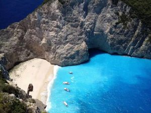
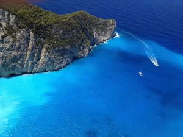
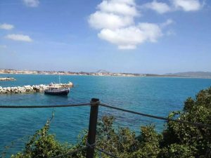
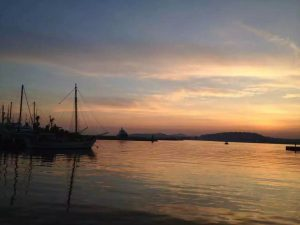

未分类 4月, 19 2016
《太阳的后裔》宋仲基撩妹取景地大揭秘！
《太阳的后裔》宋仲基撩妹取景地大揭秘！
谁也不会想到，在这个刚刚到来的春天，无数的妹子们会被这个大眼睛单眼皮的男生彻底撩倒！
据收视率调查公司数据，Wuli仲基欧巴和乔妹主演的《太阳的后裔》仅播出三集就冲破了20%的收视率大关！稳坐水木剧收视率冠军的王座！
宋仲基宋慧乔这对宋宋cp在第一集就开始了虐狗模式，满屏都是甜甜甜！ 区别于以往的韩剧套路，虽然都是为了融化你的少女心，但剧情可不是什么高富帅恋上傻白甜，而是军人和医生的组合，看起来是战地生死恋，实际上却是大写的帅加美！
此之前就有消息表示太阳的后裔是在国外取景拍摄的，那么这是哪里呢?小编在经过网上各种跟踪贴了解后终于知道，原来大尉被派兵的神秘地区乌鲁克，其实就是在希腊取的景！对，就是那个姜医生指着路边的景点宣传牌说要去，柳大尉说那个很远，但是最后还是带她去了的地方。–“因为远，才能和你在一起多呆会儿啊。”此剧不但有颜、有剧情、还有美爆眼球的风景
▼▼▼▼▼▼▼
说起希腊，大家第一反应应该是圣托里尼那湛蓝的大海白色的屋顶吧。多少人心目中的蜜月胜地呀~没有去过的小编也只能通过这幅图辨识出它了！
而看完《太阳的后裔》后我终于知道，希腊除了圣托里尼还有它！剧中仲基欧巴带乔妹来看的地方正是此地！
▼▼▼▼▼▼▼
◆◆◆希腊·扎金索斯岛·沉船湾 ◆◆◆
扎金索斯岛在希腊的西部靠近意大利，属于爱奥尼亚海，岛上最著名的景点是岛西部的沉船湾，被称为世界上最美的地方，有天堂之岛美誉。蔚蓝的海水，老朽的沉船，大自然的巧夺天工成就了这个不真实的美丽。

这里陡峭的悬崖和澄澈蔚蓝的海水，辽阔的沙滩上洁白的细沙反射着太阳的光芒。而沉船湾则是希腊扎金索斯最著名的景点，被评为世界上最美的海湾之一。
1983年，走私船Panagiotis号在运送香烟时失事搁浅于此，该地自此得名“沉船湾”。其实沉船湾这样的海滩在扎金索斯其实有很多，不过那艘破铁船为其增色不少！后水清沙幼的美景，和沙滩上锈斑累累的沉船残骸形成强烈的对比，让这个宁静的海滩更添一份神秘感！这里唯一交通方式是乘船。这样的美景搭配剧中刘时镇和姜暮烟的爱情，简直浪漫的了不得~

陡峭的悬崖和澄澈蔚蓝的海水，闻名遐迩，辽阔的沙滩上，洁白的细沙反射着太阳的光芒，与清澈的海水交相辉映，令人陶醉。附近有一个“蓝洞”因岩石海藻和阳光的完美结合而非常有名。阳光照耀在清澈的水面上，经过水底折射，在洞内看到的海水会发出奇异的蓝色。海床和岸边满是白色的鹅卵石，白色的沙子和白色的岩石壁把这里的伊奥尼亚海衬托得像蓝宝石一般亮丽，诱人。

希腊沉船湾或如浪漫绮丽的梦、或像饱经沧桑的诗、或似瑰丽多姿的画。但是，它都缘起于一个个美丽的神话故事，那些或真实或幻想的传奇，串联起这些散落在爱琴海上的小岛，注入了永生的灵魂，历经千年而依旧令人向往。
在希腊沉船湾，从400米的山顶俯看整个海湾，陡直的峭壁下，奇异的美丽！峭壁上有个人工修建的小型金属护栏观景台，站在观景台上向下望，犹 如漂浮在400米高空的热气球上，双腿不由地有些发软起来。这绝佳的视角，让人不得不勇敢地克服恐惧才能欣赏到大自然的恩赐。

沉船湾不收费哦~如果跟团游可以直接抵达沉船湾游览，如果想自己过去，扎金索斯当地的大部分酒店、旅行社与码头可以直接买到一日游出海活动，花费为15欧 /人。如果选择在扎金索斯岛上自驾前往，可从扎金索斯镇出发，沿Επαρ.Οδ. Ζακνθου公路向西行驶约35公里即可到达！
男同胞们，爱她就带她去沉船湾吧！
在透明的海水上飞驰，在洁白的细沙上漫步，
拾一枚纯白鹅卵石作为爱情信物！
是不是立马可以俘获她的心呢？
”，即可获取浪漫心动之旅！
详情请咨询 到处跑的A hui ：13419535352
0 Comments